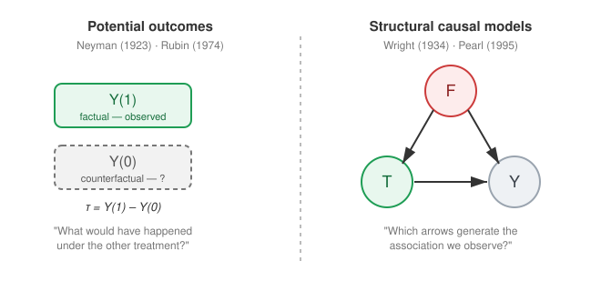
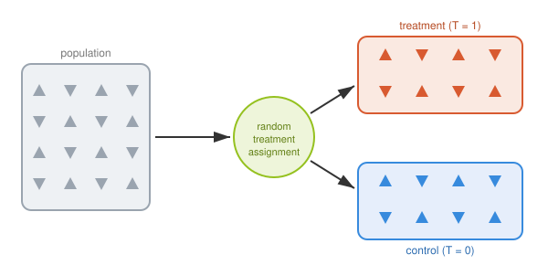
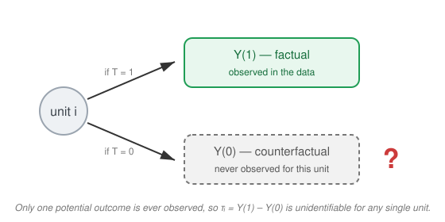

Concepts of Causal Inference#
Association is not Causation#
A central lesson of statistics is that correlation does not imply causation. Two variables can be strongly associated without one causing the other. Classic examples include the correlation between ice cream sales and drowning rates (both driven by summer weather) or the correlation between the number of firefighters at a fire and the damage caused (both driven by fire severity).
In actuarial science, this distinction is especially consequential. Insurance data is inherently observational: policyholders are not randomly assigned to risk factors or interventions. A pricing model may find that policyholders who purchase additional coverage have higher claim rates — but this likely reflects adverse selection (high-risk individuals self-selecting into more coverage), not a causal effect of coverage on claims.
Confusing association with causation leads to flawed decisions:
Pricing: Adjusting premiums based on a spurious predictor introduces cross-subsidisation.
Interventions: A wellness programme that appears to reduce claims may simply attract healthier policyholders (healthy user bias).
Reserving: Trend extrapolations based on confounded associations can systematically over- or under-reserve.
Causal inference provides the tools to move beyond “what predicts \(Y\)?” to “what happens to \(Y\) if we intervene on \(T\)?” — the question that matters for decision-making (Angrist & Pischke, 2015; Python Causality Handbook, Ch. 1).
Two Traditions of Causal Inference#
Modern causal inference grew out of two complementary traditions, and this tutorial draws on both.
The potential-outcomes (or counterfactual) tradition originates with Neyman (1923), who introduced potential outcomes for randomized experiments, and was extended to observational studies by Rubin (1974). The potential outcomes framework posits that for every unit, there are multiple outcomes that could happen, but we only ever observe the one corresponding to the treatment. It defines causal effects as contrasts between the outcomes a unit would experience under alternative treatments, and frames causal inference as a missing-data problem.
The structural / graphical tradition traces back to the path analysis of Wright (1934) and was formalised by Pearl (1995), 2009. It encodes causal assumptions in directed acyclic graphs (DAGs) and structural equations, making questions of confounding, adjustment, and identification graphically explicit.
{kind=link}

Fig. 1 The two pillars of causal inference. The potential-outcomes framework (left) reasons about unit-level counterfactuals and the effect \(\tau = Y(1) - Y(0)\); structural causal models (right) reason about the graph of causal mechanisms. The two are formally equivalent and used together throughout this tutorial.#
The two languages are provably equivalent — every DAG implies a set of potential-outcome assumptions and vice versa (Pearl, 2009). We use potential outcomes to define estimands (Chapter Assumptions) and DAGs to reason about which variables to adjust for (Chapter Graphical Causal Models).
Treatments#
A treatment (or intervention) is the variable whose causal effect we want to study. We denote it \(T\).
In the simplest binary setting, \(T \in \{0, 1\}\), where \(T=1\) indicates that the unit received the active treatment and \(T=0\) indicates control (no treatment, placebo, or standard of care). The framework generalises to multi-valued (\(T \in \{0,1,\dots,K\}\)) and continuous treatments (\(T \in \mathbb{R}\)), though most of this tutorial focuses on the binary case.
A treatment must be a well-defined intervention: something that could, at least in principle, be manipulated or assigned to a unit. This is sometimes called the “no causation without manipulation” principle (Rubin, 1974; Angrist & Pischke, 2015). Vague or immutable attributes (e.g. “being older” or “being male”) are problematic because it is unclear what it would mean to intervene on them, making the potential outcomes ill-defined.
Propensity Score#
The probability of receiving treatment given a set of observed covariates \(X\), defined as: $\(\pi(x) = \mathbb{P}(T=1 \mid X=x)\)$
The propensity score was introduced by Rosenbaum & Rubin (1983). For a practical introduction to propensity score methods, see Austin (2011).
Assignment Mechanism#
The assignment mechanism describes the process by which units come to receive a particular treatment. In an RCT the mechanism is known and controlled by the experimenter. In observational data, treatment is instead determined by factors such as self-selection, physician decisions, or policy rules — and these factors may themselves be related to the outcome (Wooldridge, 2012). Understanding (or modelling) the assignment mechanism is the central challenge of causal inference from observational data, and it is what the identification assumptions (consistency, positivity, exchangeability) are designed to address.
Confounding#
A confounder (or fork) \(F\) is a variable that causally influences both the treatment assignment \(T\) and the outcome \(Y\). When confounders are present but not adjusted for, the observed association between \(T\) and \(Y\) is a mixture of the true causal effect and the spurious association induced by the confounder — this is confounding bias (Wooldridge, 2012; Angrist & Pischke, 2015). For a visual tutorial on confounding via Simpson’s Paradox, see this simulation walkthrough.
The goal of causal inference methods (matching, weighting, regression adjustment, etc.) is to eliminate this bias by appropriately adjusting for the confounders.
Randomized Controlled Trials#
The “gold standard” for causal inference is the Randomized Controlled Trial (RCT). Randomization in treatment assignment ensures that treatment and control groups are as similar as possible, eliminating confounding and ensuring the treatment \(T\) is independent of potential outcomes (Rubin, 1974; Angrist & Pischke, 2015).
{kind=link}

Fig. 2 In an RCT, treatment is assigned by chance, so both measured and unmeasured covariates are balanced across the treatment and control arms. This balance is what makes the simple difference in means an unbiased estimate of the causal effect.#
Because randomization makes \(T \perp (Y(1), Y(0))\) hold by design, the RCT is best understood as the benchmark that observational methods try to emulate. When we cannot randomize, the methods in this tutorial — matching, weighting, regression adjustment, and graphical reasoning — all aim to reconstruct, conditional on covariates, the covariate balance that randomization would have produced automatically.
Note
RCTs are often infeasible in actuarial settings: we cannot randomly assign policyholders to claim, randomly grant coverage, or withhold a wellness programme for experimental purposes. Observational causal inference exists precisely to approximate the RCT benchmark from the data we do have.
Observational Data#
Causal inference from observational data relies on the idea that, under the assumptions of the Rubin Causal Model (Rosenbaum & Rubin, 1983), an observational study can be regarded as a conditionally randomized experiment. Under the assumptions of ignorability, the observed data \(D\) represent the essential features of a randomized experiment, enabling the identification and consistent estimation of causal effects.
Fundamental Problem of Causal Inference#
Using binary treatments, every unit \(i\) has two potential outcomes — \(Y_i(1)\) under treatment and \(Y_i(0)\) under control — but only one can ever be observed. The observed outcome is the factual; the outcome under the alternative treatment is the counterfactual. Since we cannot reset time to see what would have happened to the same unit under a different treatment, it is impossible to directly calculate individual treatment effects \(\tau_i = Y_i(1) - Y_i(0)\). This fundamental identification problem was formalised by Rubin (1974) and is discussed in detail in Angrist & Pischke (2015, Ch. 1).
{kind=link}

Fig. 3 The fundamental problem of causal inference: for each unit we observe the outcome under the treatment actually received and never the counterfactual. Causal inference therefore targets average effects across units rather than individual-level effects.#
Identifiability#
A causal effect is identifiable if it can be expressed purely in terms of the observed data distribution, given a set of structural assumptions.
The key distinction is between a causal estimand — defined via potential outcomes (e.g. \(\mathbb{E}[Y(1) - Y(0)]\)) — and a statistical estimand — a quantity computable from the observed data (e.g. \(\mathbb{E}[Y \mid T=1, X] - \mathbb{E}[Y \mid T=0, X]\)). Identifiability is the bridge: the assumptions of consistency, positivity, and exchangeability allow us to equate the causal estimand with a statistical estimand, making estimation possible. For a formal treatment, see Oxford: Causal Assumptions and the Assumptions Guide.
For heterogeneous treatment effect estimation, see Athey & Imbens (2016), Wager & Athey (2018), and Schmidt (2018).
Causal Conclusions Rest on Untestable Assumptions#
The bridge from a causal estimand to a statistical estimand is built entirely from assumptions, and the most important of them cannot be checked from the data alone. In particular, exchangeability / no unobserved confounding (Assumption 4 in Assumptions) is fundamentally untestable: the data are equally consistent with “no hidden confounder” and with “a hidden confounder we never measured” (Rubin, 1974; Pearl, 2009; Hernán & Robins, 2020).
Important
No statistical procedure can prove a causal effect from observational data. Every estimate is conditional on assumptions that come from domain knowledge, not from the data. The role of the analyst is to (1) state these assumptions explicitly, (2) encode them in a DAG or potential-outcomes model, and (3) probe how fragile the conclusions are when the assumptions are relaxed.
This is why sensitivity analysis is not optional but a core part of any credible causal study: rather than asking “is exchangeability true?”, we ask “how strong would an unmeasured confounder have to be to overturn our conclusion?”. These tools — E-values, Rosenbaum bounds, and partial-\(R^2\) methods — are developed in Diagnostics and Sensitivity Analysis and Validation and Sensitivity Analysis.
Notation#
Throughout this tutorial we adopt the following conventions. Let \(D = \{(X_i, T_i, Y_i)\}_{i=1}^{n}\) denote the observed dataset, where for each unit \(i\):
Symbol |
Meaning |
|---|---|
\(X\) |
Observed covariates (patient/policyholder characteristics) |
\(T\) |
Treatment assignment (\(T \in \{0,1\}\) in the binary case) |
\(Y\) |
Observed outcome |
\(Y(1), Y(0)\) |
Potential outcomes under treatment and control |
\(F\) |
Fork / confounder (common cause affecting both \(T\) and \(Y\)) |
\(C\) |
Collider (common effect of two or more variables) |
\(M\) |
Mediator (variable on the causal path from \(T\) to \(Y\)) |
\(S\) |
Sensitive attribute (protected characteristic, e.g. gender, ethnicity) |
\(U\) |
Unmeasured / unobserved confounder |
\(D\) |
Observed dataset: \(D = \{(X_i, T_i, Y_i)\}_{i=1}^{n}\) |
\(\pi(x)\) |
Propensity score: \(\pi(x) = \mathbb{P}(T=1 \mid X=x)\) |
Resources: